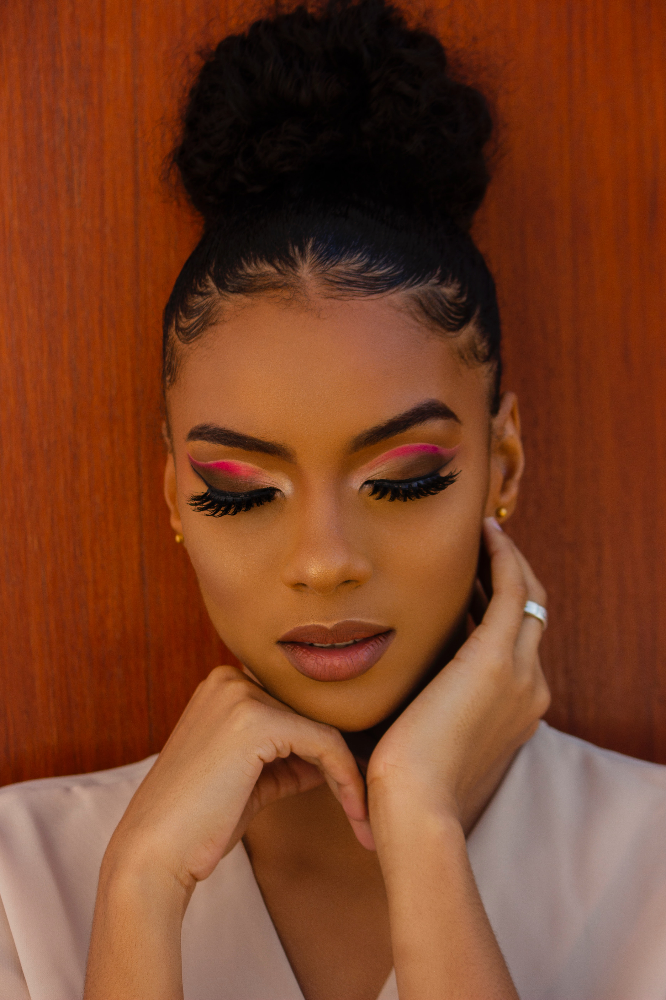
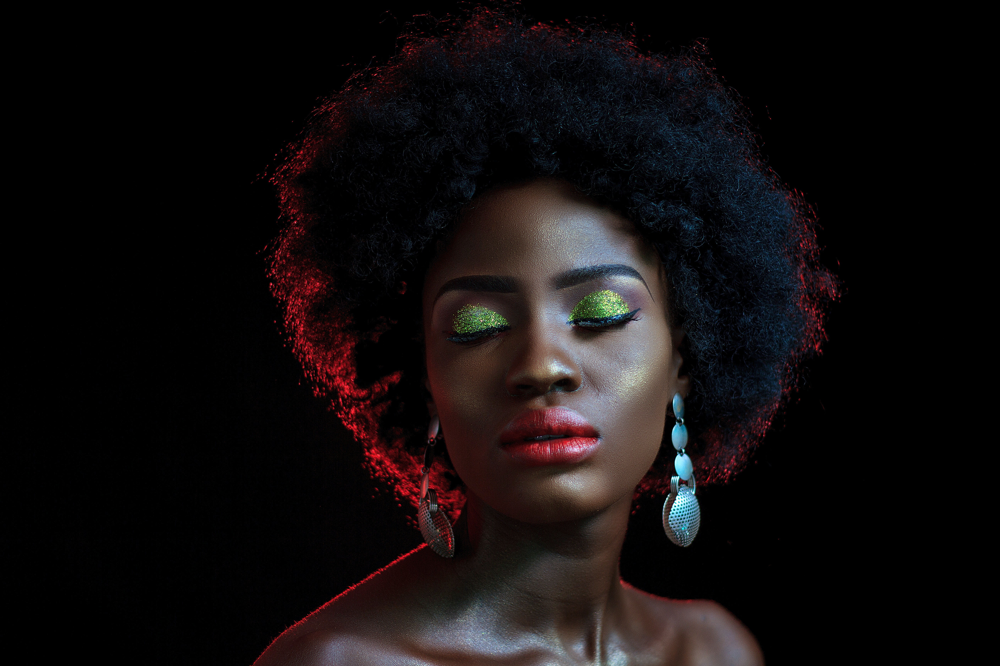
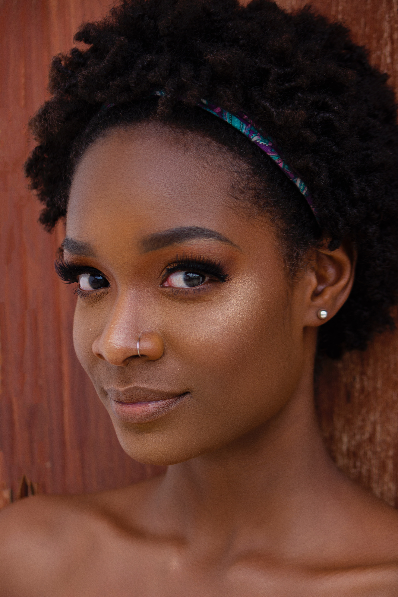

Makeup is part of my attire, I wear it everyday once I'm leaving the house. I wear skin-like makeup most days because I have a very conservative job. However, on the weekend, girl! I beat! New Face, Who This?? The transformation is unreal. I love vibrant makeup, but makeup on the cheaper side. I am a drug store makeup girl, Revlon,Maybelline you name it- that's me.
talk about i like makeup for everyday, skin like and wearing makeup to work and going out.
Zuri

I am a makeup artist and photographer, so you guessed it... I loveeeee makeup. I love makeup that is vibrant but not gaudy. Painting a client's face is how I best express myself. It's my joy really when I transform someone's face and see them light up. I am particular about makeup since the right contour can look oh so magical on camera.
Kai-Lee

I love makeup! But with my sensitive skin it can be quite difficult although it has gotten better over the years to find the right one. Makeup that is free of toxins that will not irritate my skin is so important but can be more expensive than those not are not for sensitive skin. My go to makeup brand is Kosas. They have a wide variety of products to choose from and they are also cruelty-free.
Chelsea